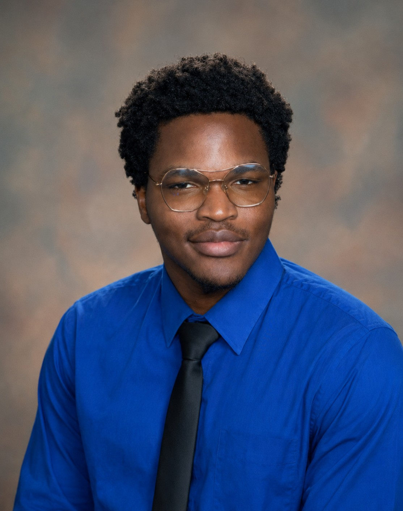

Medical Device Product Development Engineer
Download Resume LinkedInRecent M.S. Biomedical Engineering and MBA graduate with experience in medical device product development, CAD design, prototyping, verification testing, quality engineering, and additive manufacturing. I am interested in designing, developing, and improving medical devices that solve real clinical and usability challenges.
Master's thesis focused on redesigning a button hook for individuals with dexterity impairments using ergonomic design principles, CAD modeling, rapid prototyping, and usability testing.
Designed and developed a cost-effective electrospinning system capable of producing aligned and random polymeric nanofibers for tissue engineering applications.
Supported orthopedic medical device product development through CAD modeling, prototyping, verification and validation support, engineering documentation, and quality-related activities.
Creo Parametric • SolidWorks • CAD Design • 3D Printing • Prototyping • DFM • Verification & Validation • Quality Engineering • MATLAB • ANSYS Fluent • Excel • ROS2
Email: UgochukwuOkonkwo04@gmail.com
Email Me LinkedIn